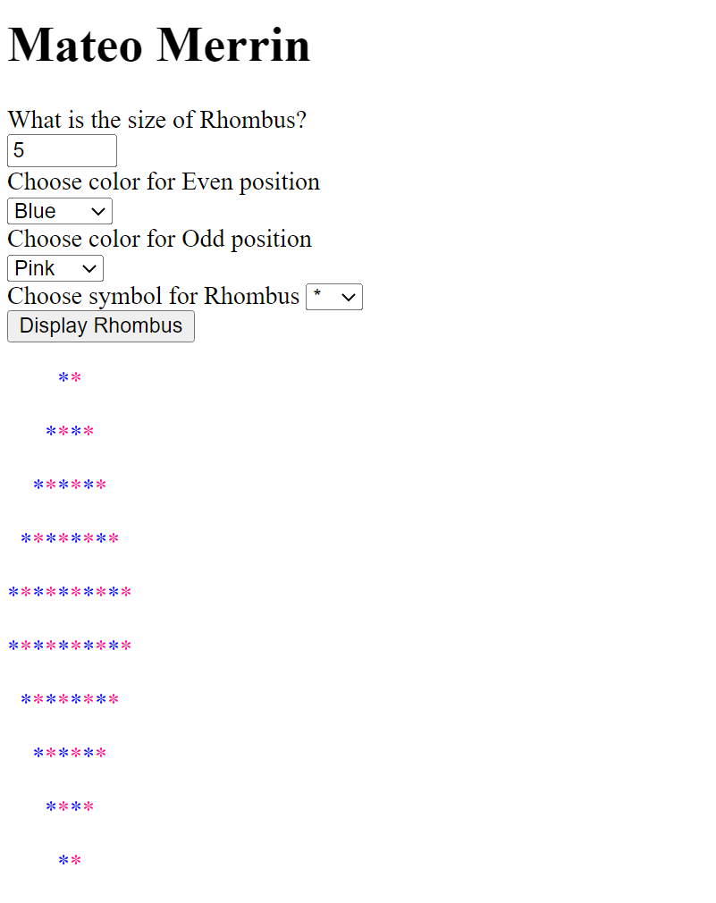
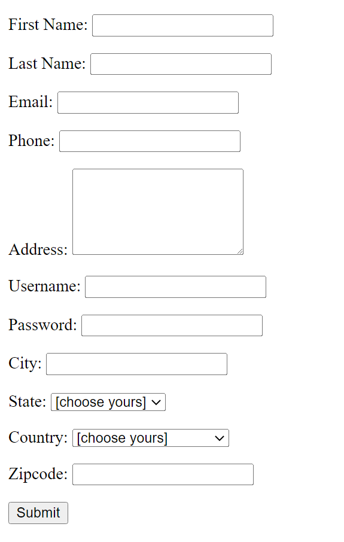
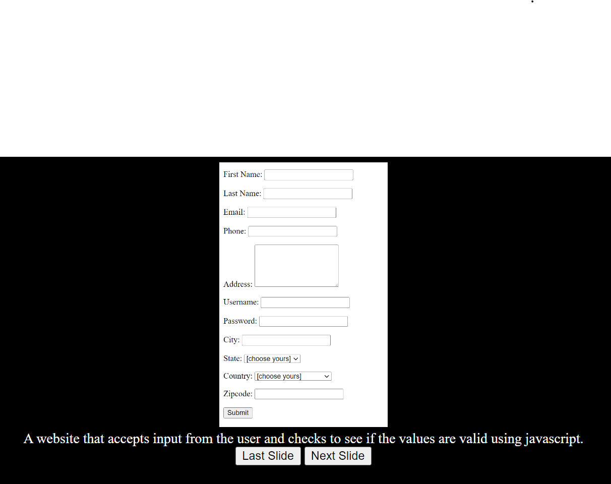

The "Resume" artifact was the first artifact I created and it is made purely html with no CSS. Link to site.
Chessboard
The "Chessboard" artifact was the second artifact I created. It's main purpose was to test my skills in CSS and I had to create it without tables. Link to site.
Rhombus Creator 
The "Rhombus" artifact was the third artifact I created and it was one of my first experiences using javascript to change html elements.Link to site.
Javascript Form 
The "Form" artifact was the fourth artifact I created. I created it in order to test my ability to create forms that required certain aspects of the user's response.Link to site.
Slideshow 
The "Slideshow" artifact was the fifth artifact I created. I used javscript to change the image every 10 seconds or when the user pressed a button to foward or go back one image.Link to site.